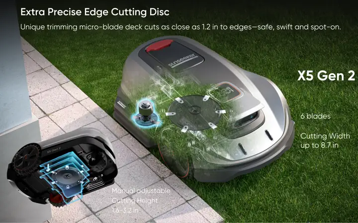

01 / NEW GEN2UP TO 0.5 ACRE
X5 Gen2Product imagery · preview

THE 0.5-ACRE SWEET SPOT
X5 Gen2
Right-Sized AWD. Cleaner Edges.
For real suburban lawns, everyday slopes and a cleaner finish around paths and borders.
0.5ACRE
60%SLOPE
8.7 inCUT WIDTH
From everyday 0.5-acre lawns to expansive 1.5-acre properties, discover an AWD mower for the yard you actually have.


Choose by lawn size, terrain and cutting priorities. Each model has a different purpose — not simply a higher number.
For real suburban lawns, everyday slopes and a cleaner finish around paths and borders.
Wide dual-disc mowing and AWD traction for larger, sloped lawns with varied terrain.
Coverage for expansive properties with 14-in dual discs and standard 4G-GPS tracking hardware.
Select any model to explore its real strengths, then highlight it in the specification table.
For real suburban lawns, everyday slopes and a cleaner finish around paths and borders.

One shared Sunseeker family, engineered for different everyday mowing needs.
Create virtual boundaries and edit mowing areas in the app, without burying perimeter wire.
AWD and suspension systems help handle uneven lawns and slopes within the rated capability of each model.
X5 Gen2 focuses on cleaner edges; X7 Gen2 and X7 Plus Gen2 deliver wide 14-in dual-disc cutting.
The maximum slope and cutting width are the same for both X7 Gen2 models; the Plus differentiates through lawn coverage and included anti-theft hardware.
| FEATURE | X5 Gen2UP TO 0.5 ACRE | X7 Gen2UP TO 0.75 ACRE | X7 Plus Gen2UP TO 1.5 ACRES |
|---|---|---|---|
| Rated lawn size | Up to 0.5 acre | Up to 0.75 acre | Up to 1.5 acres |
| Drive | All-wheel drive | All-wheel drive | All-wheel drive |
| Max slope | Up to 60% / 30° | Up to 70% / 35° | Up to 70% / 35° |
| Navigation | RTK + VSLAM 2.0 | RTK + VSLAM 2.0 | RTK + VSLAM 2.0 |
| Cutting width | 8.7 in | 14 in | 14 in |
| Cutting height | 1.6–3.2 in | 0.8–4.0 in | 0.8–4.0 in |
| Height adjustment | Manual | App-adjustable | App-adjustable |
| Cutting system | Six-blade floating main disc | Floating dual cutting discs | Floating dual cutting discs |
| Notable advantage | Side edge cutting disc | Wide dual floating discs | 1.5-acre coverage + standard 4G-GPS |
| 4G-GPS hardware | Optional module — verify configuration | 4G-GPS optional accessory | Standard 4G-GPS hardware |
Area figures indicate rated mowable grass coverage, not one-charge mowing. Performance depends on surface, setup and mowing schedule. Product imagery is a design preview; verify final SKUs, services and accessories before commercial publication.
Select your lawn area for a starting recommendation. Compare terrain, cutting features and service configuration before buying.
Right-sized AWD for 0.5-acre lawns, with a side edge cutting disc.